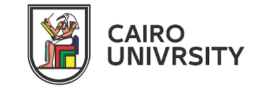

Ph.D. in Computer Science
King Abdullah University of Science and Technology (KAUST)
Jeddah, Saudi Arabia
Sep 2022 - Nov 2026
Thesis Topic:
"Unsolicited Advice in the Large Models Era"
Advisor:
Professor Mohamed Elhoseiny
Research Focus:
My research challenges the prevailing belief that scaling model size and data alone is sufficient to unlock all capabilities in large models. I investigate how new skills and forms of knowledge—particularly hard-to-learn physical and grounding knowledge—can be added efficiently through targeted, principled interventions rather than brute-force scaling. In works such as Look&Learn, I demonstrate that lightweight mechanisms like attention-guidance losses can significantly improve grounding and reduce hallucinations in large VLMs (even at the 7B scale), revealing that large models still benefit from well-designed inductive biases. More broadly, my thesis argues that the next leap in foundation models will come from how we teach models, not just how big we make them.
Internships:
Adobe 2025 | Adobe 2026
Recognition:
CEMSE Dean's List 2024 (Top CS student at KAUST)
Visiting Student
King Abdullah University of Science and Technology (KAUST)
Jeddah, Saudi Arabia
Nov 2021 - Aug 2022
Project:
3D Visual Grounding research that yielded a paper accepted to NeurIPS 2023
Outcome:
"Look Around and Refer: 2D Synthetic Semantics Knowledge Distillation for 3D Visual Grounding" - NeurIPS 2023

Master of Science in Computer Science
Faculty of Engineering, Cairo University
Cairo, Egypt
Mar 2019 - May 2022
GPA:
3.89/4.0
Specialization:
Machine Learning and Computer Vision
Thesis:
"EMCA: Efficient Multiscale Channel Attention Module" - Published in IEEE ACCESS 2022
Advisor:
Professor Mohsen A. Rashwan
Additional Publications:
"PKCAM: Previous Knowledge Channel Attention Module" - NeurIPS ML4AD Workshop 2021
Bachelor of Engineering in Computer Science
Faculty of Engineering, Cairo University
Cairo, Egypt
Sep 2012 - Jul 2017
Specialization:
Computer Science (Communications and Electronics Engineering)
Graduation Project:
"SASB: Smart Assist System for Blind people"
Project Advisor:
Professor Mohsen A. Rashwan
Achievement:
1st Place at IbTIECar2017 in Machine Learning Track (ITIDA, Egypt)